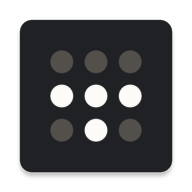

Tailscale permite crear redes virtuales instalándolo de un modo sencillo en cualquier dispositivo y sistema operativo, ya que es multiplataforma y arquitectura (Windows, Linux, Mac, Android, Raspberry,… amd64, ARM,…), en minutos, creando una red segura entre tus servidores, PC's de escritorio e instancias en la nube. Incluso cuando está detrás de firewalls o subredes como un CG-NAT o un NAT, Tailscale simplemente funciona.

La VPN que utiliza para crear esta red es Wireguard, así que ya te puedes hacer una idea del potencial que tiene Tailscale.
Nos registramos en la web https://tailscale.com/ o nos logeamos con nuestra cuenta de Google, Microsoft o GitHub.
Puedes encontrar los métodos de instalación para cualquier distro en https://tailscale.com/download.
Los paquetes esta disponibles para CPU x86 y ARM, tanto en 32 bits como en 64 bits variantes.
curl -fsSL https://pkgs.tailscale.com/stable/ubuntu/focal.gpg | sudo apt-key add -
curl -fsSL https://pkgs.tailscale.com/stable/ubuntu/focal.list | sudo tee /etc/apt/sources.list.d/tailscale.listVisite la consola de administracióny autoriza tu nuevo terminal. Si iniciaste tu sesión con una cuenta Gmail, se autoriza automáticamente. (Nota: deberás volver a autenticarse ocasionalmente a menos que desactive la caducidad de la clave).
Obtén tu dirección IP de Tailscale
Yo he creado desde el repositorio de GitHub esta imagen (ugeek/tailscale:amd64), pero tu puedes utilizar también la tuya propia.
version: "2.4"
services:
tailscale:
privileged: true
hostname: rp4 # Nombre de tu dispositivo
network_mode: "host"
container_name: tailscale
image: tailscale/tailscale:latest
volumes:
- "/opt/appdata/tailscale/var_lib:/var/lib" # Los datos de estado se almacenaran en el directorio
- "/dev/net/tun:/dev/net/tun" # necesario para que tailscale funcione
cap_add: # necesario para que tailscale funcione
- net_admin
- sys_module
command: tailscaled
restart: unless-stopped
Logearnos
Status
Para ver todos los dispositivos de tu red y sus IP's:
Tu IP en Tailscale
Puedes acceder a la web de https://tailscale.com y descargar la aplicación para el sistema Operativo que utilices.
También encontrarás otros paquetes estables o inestables en las siguientes urls.
Publicado por Angel el Thursday 17 June del 2021 y actualizado el Tuesday 30 August del 2022
También te puede interesar:
Powered by org-bash-blog
Written in OrgMode with Emacs and converted to HTML with Pandoc

Este obra está bajo una licencia de Creative Commons Reconocimiento-NoComercial-CompartirIgual 4.0 Internacional.